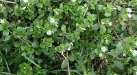
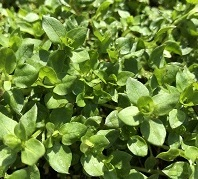
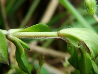

|
|
Identification
The two varieties of chickweed, mouse-eared and common, are both edible. The common variety having only one
line of hairs on it's stem. In early spring it can be seen with the newest top leaves
very close together, almost looking like a flower bud. The way it grows is dependent on the ground it grows on.
It commonly will act as ground cover and grow horizontally, making very shallow roots.
The flowers are about 1 cm across with white, deeply notched pedals.

Information
Chickweed Flowering

|
|
When to look: Very early Spring - Mid-Fall
Where to look: Everywhere, very common in missouri. Fields and yards.
This plant prefers moist, loam like soil.
Edible Parts:
|
Chickweed - Early Spring

|
Leaves
- Can be used like spinach and lettuce, raw in salads and sandwiches
- Can be cooked into stews and soups
- Can be used externally on cuts, wounds, burns, skin irritations, etc.
Flowers and Stems
- Can be cooked in with the leaves in soups and stews.
|
One Line of Hairs

|
Chickweed is a delicious plant. It almost doesn't have a taste and can be used just as any other
mild tasting green.
A not-so-common look alike of chickweed is the Scarlet Pimpernel, and the easiest way to distinguish them
without seeing flowers, is that Pimpernel has small black dots under the leaves. Although edible and
claimed to be medicinal, Pimpernel can cause rashes on sensitive skin.
most people from Missouri have seen it all their life.
|
|